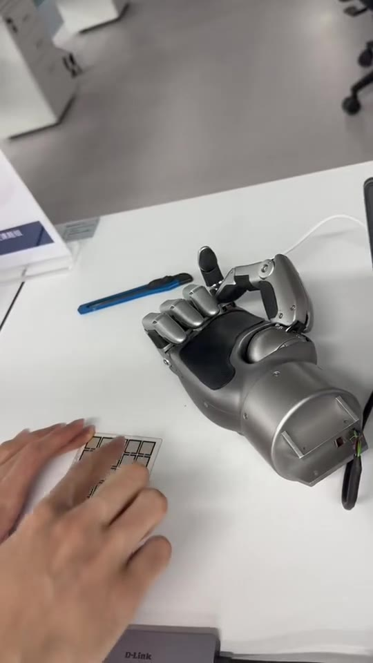

Biography
I work on controllable generation, robotics, and tactile perception. My research explores how language can specify fine-grained facial motion, and how sensing and control can make physical robots more expressive and interactive.
I conduct undergraduate research at XJTLU and previously joined HKUST (Guangzhou) for summer research in tactile perception and humanoid simulation.
Selected Projects
2026
Undergraduate Researcher · XJTLU · Prof. Kaizhu Huang’s group · Mar 2026–present
Developed text-guided global emotion and local AU control, using layer-wise emotion and intensity conditioning and Blendshape supervision to connect facial motion with action semantics. A controlled study achieved 97.3% positive target-AU response and 90.7% monotonic intensity response across 75 AU–identity conditions.
[Project Page] [Video Demos] [Evaluation]
2025

Undergraduate Researcher · XJTLU · Advisor: Jie Sun · Oct 2025–present
Reworked cheek linkages and upper and lower jaw connections, revised facial-skin mould CAD, and supported assembly of an adapted Morpheus head. Implemented per-actuator position commands and coordinated motion sequences for facial-expression poses.
[Project Page] [Image Gallery]

Research Assistant · HKUST (Guangzhou) · Advisor: Yiding Ji · Jun–Sep 2025
Built a ROS 2 tactile-to-gesture pipeline connecting a 5 × 5 pressure array, neural digit recognition and Linker Hand L10 joint commands. Also trained Unitree G1 locomotion policies in Isaac Lab, adding foot-contact observations and refining reward terms.
[Project Page] [Video Demo] [G1 Simulation] [Code]
Engineering Projects

PCB and Firmware Developer · MEC202 · Mar–May 2026
Developed a three-board Renesas MCU architecture, integrated sensor and ADC firmware, and supported 433 MHz telemetry, power-rail checks and prototype debugging.
[Project Page]
Smart Door with Human Detection and Fire Warning
Group Leader · MEC104 · Apr–Jun 2025
Integrated PIR, ultrasonic, temperature and gas sensing with an Arduino controller, servo-driven door and warning/display modules. Contributed PCB design, hardware integration and interaction testing.
Planet Catalogue System
Group Leader · CPT109 · Oct–Dec 2024
Built a menu-driven catalogue in C with administrator and observer interfaces, supporting creation, editing and retrieval of seven planetary attributes.
Education and Awards
Xi’an Jiaotong-Liverpool University · B.Eng. in Telecommunications Engineering, expected July 2027, with a degree awarded by the University of Liverpool.
Year 2 rank: 4/97 · Year 3 rank: 5/97 · WES GPA: 3.82/4.00
University Academic Achievement Award (top 10%), 2025–2026 and 2026–2027.
Selected coursework: Digital Signal Processing; Continuous and Discrete Time Signals and Systems; Microprocessor Systems; Instrumentation and Control System; CMOS Digital Integrated Circuits; C Programming and Software Engineering; Engineering Mathematics.
Year 4, in progress: Digital System Design with HDL; Information Theory and Data Communications; Analogue and Digital Communications II; Applied Electromagnetics and Antennas.
Independent Study and Coursework Projects
CS285: Deep Reinforcement Learning
Independent study of UC Berkeley course materials · Jun–Aug 2025
Completed programming assignments on behavioural cloning and DAgger, policy gradients, Q-learning and actor–critic methods, model-based RL, exploration and offline RL; analysed policy returns and learning behaviour in the provided environments.
Modern Robotics: Mechanics, Planning, and Control
Independent online coursework · Jun–Aug 2025
Implemented product-of-exponentials forward kinematics, numerical inverse kinematics and Jacobian-based velocity control, alongside time-scaled trajectory and feedback-control exercises in Python.
TokenHSI reproduction. A curated fork with an experiment map and setup notes for studying physics-based human–scene interaction. [Code and Notes] [Original Project]
Technical Skills
Programming: Python, C/C++, MATLAB, ARM assembly.
Learning and vision: PyTorch, Transformers, facial AUs, Blendshape supervision, differentiable rendering.
Robotics and control: ROS 2, Isaac Lab/Sim, robot kinematics, trajectory planning, feedback control.
Hardware and tools: Arduino, Renesas MCUs, PCB design, CAD modelling, embedded servo control, Linux, Git and Conda.